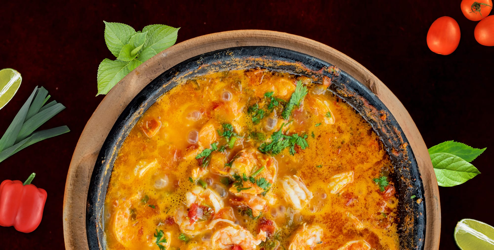
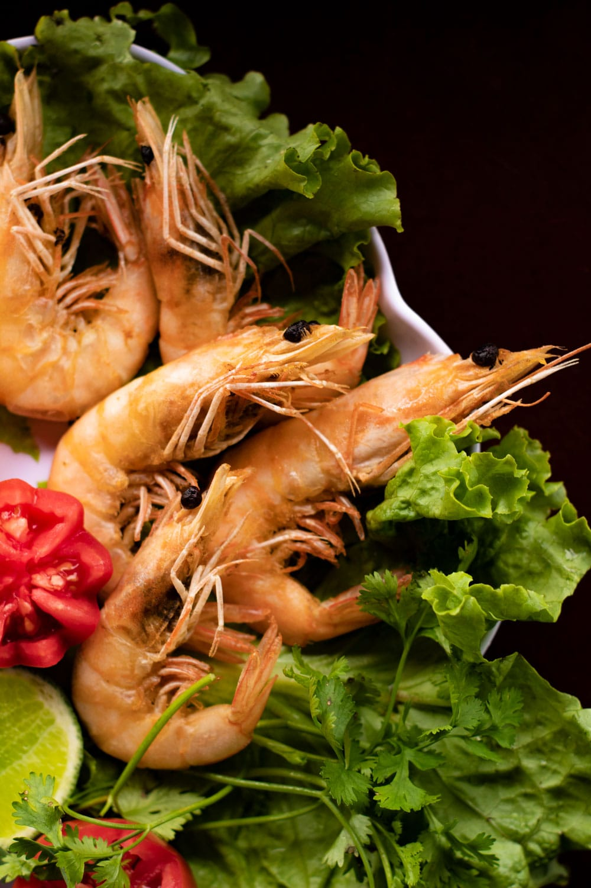
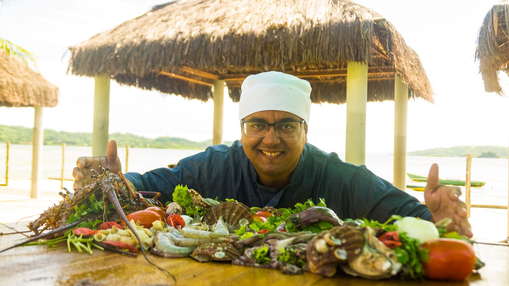
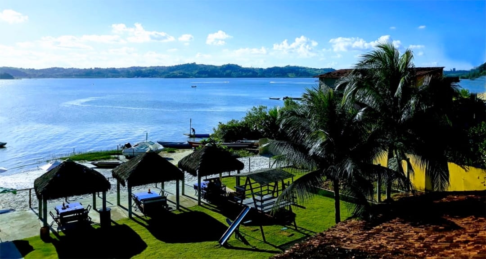

Carro-chefe
Siri mole frito
A “iguaria exclusiva da região”, como o próprio restaurante descreve. Também em moqueca.
Desde 1981 Caboto · Ilha de Maré
Moquecas, lagosta na manteiga e o siri mole frito, carro-chefe da casa. Pescados frescos, trazidos por pescadores locais, em duas unidades: no Caboto e na Ilha de Maré.

Por onde começar
Os pratos das duas unidades, com busca e o preço de cada casa.
Abrir o cardápioReservasUnidade, dia, horário e pessoas. A reserva chega pronta no WhatsApp.
Reservar agoraIlha de MaréTravessia curta a partir do Caboto, piscina natural e mesa na ilha.
Como chegarO ChefA cozinha regional baiana com o toque de quem cresceu ali.
Conhecer o chefDa cozinha
"Nosso cardápio é inspirado na culinária regional da Bahia, onde prevalece o frescor dos ingredientes." O resto está no cardápio completo.
A “iguaria exclusiva da região”, como o próprio restaurante descreve. Também em moqueca.
De camarão, peixe, polvo, ostra, peguari, siri mole e siri catado, com arroz, pirão, feijão fradinho e farofa.

Camarão frito, encapotado ou em salada, e a lagosta frita na manteiga.

Do mar para a mesa
“Diariamente nosso Cheff seleciona pescados frescos da nossa costa trazidos por pescadores locais.”Moqueca de Ouro
Camarões, lagostas, peixes, polvos, ostras e o siri mole que dá nome à fama da casa. Carnes e frango também estão no cardápio, e opções veganas podem ser pedidas com antecedência.
A história do Chef DiltonDuas unidades
R. dos Missionários, Caboto, Candeias · próximo ao porto de Aratu
Durante o dia, com reserva
Abrir no mapaOratório Eco Clube · Ilha de Maré, Salvador
Durante o dia, com reserva
Abrir no mapaIlha de Maré

O Chef
“Natural do Salvador e criado no Vilarejo de Caboto, Dilton desde criança é apaixonado pela culinária regional.”Moqueca de Ouro
Estudou gastronomia no Senac e se graduou na Unirb. Os pratos “não fogem às tradições da cozinha regional baiana”, com o toque dele.
Quem já foi
Um restaurante ótimo, aconchegante e comida maravilhosa. Ambiente muito familiar.
Possui um ambiente aconchegante, localizado bem de frente ao mar e o siri mole frito é sublime
Sempre que viajamos nosso foco é a gastronomia e o Trip nos auxilia a encontrar o diferencial. Foi assim que chegamos no Moqueca de Ouro e sem dúvida foi um dos melhores restaurantes que já conheci.
Avaliações do TripAdvisor citadas no antigo site do restaurante. Notas no Google em 01/10/2026: 4,6 (Oratório) e 4,4 (Caboto).
Galeria
Reserve sua mesa
O atendimento do Moqueca de Ouro é com reserva. Aqui o cliente escolhe a unidade, o dia, o horário e quantas pessoas vêm, e a mensagem chega organizada no WhatsApp da casa, sem ninguém precisar perguntar tudo de novo.
Dúvidas frequentes
Sim. O atendimento é feito com reserva, pelo WhatsApp (71) 99733-3398 ou pelo simulador desta página.
De barco. A travessia sai do Caboto e leva cerca de 15 minutos; na reserva, a equipe confirma o horário.
Não: cada unidade tem o seu cardápio. No cardápio desta página, troque entre Caboto e Oratório para ver os preços.
Arroz, pirão, feijão fradinho e farofa.
Sim: carne do sol, filé de frango e picanha na chapa (Caboto). Opções veganas podem ser pedidas com antecedência.
Sim. A unidade Oratório recebe aniversários, confraternizações e grupos. Veja a página de eventos.